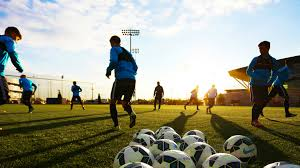
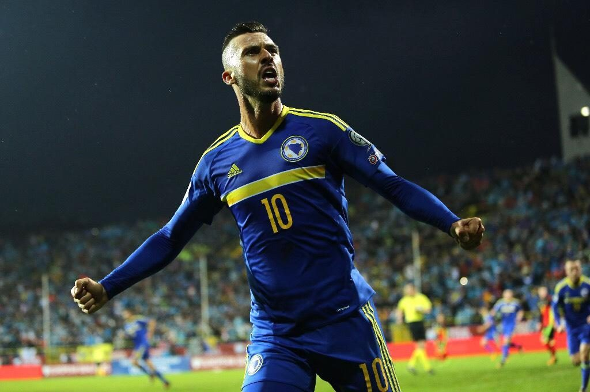
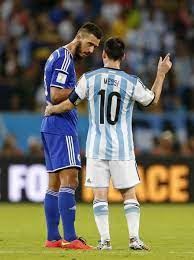
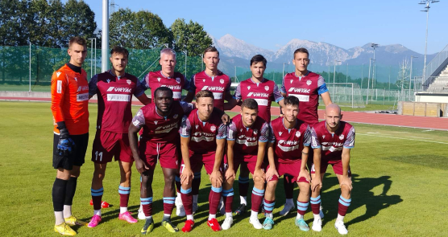
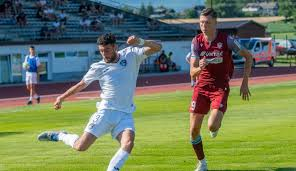
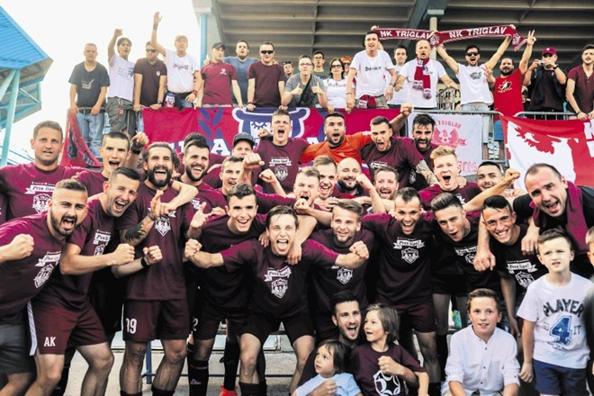

O nas

Slovenska Nogometna Skavtska Agencija (SFSA) je vodilna organizacija, ki se ukvarja z odkrivanjem in promocijo talentiranih nogometašev v Sloveniji. Naša misija je pomagati mladim nogometašem, da dosežejo svoje sanje in se prebijejo v profesionalni nogomet. Imamo kar preko 25 zaposlenih katerim je cilj pomagati mladim športnikom. Nikakršna Skrivnost ni da je naša nogometna agencija najuspešnjejpa oziroma ena izmed najuspešnejših agencij v Srednji Evropi in Balkanu. Igralcem omogočimo da pokažejo svoj talent z najnovejšimi metodami in pa da jih pripravimo za profesionalen level igre. Seveda to ni vse z pomočjo naših zaposlenih smo agencija z multinacionalnimi vezmi z katerimi redno komuniciramo in jim ponujamo naše talente. Večji klubi z katerimi smo redno na vezi(vsakih 30-120dni) : FC Barcelona, FC Real Sociedad, FC Valencia, FC Monaco, FC Atalanta, Fc Empoli, in lista se še nadaljuje z velikimi uspešnejšimi klubi.
O
Harisu
Medunjaninu


Haris Medunjanin je ugleden nogometaš z bogato kariero. Njegove izjemne sposobnosti na sredini igrišča in njegov vodstveni duh so ga naredili za ključnega igralca v številnih klubih. Z več kot desetletjem izkušenj v profesionalnem nogometu, je Haris inspiracija za številne mlade športnike. Haris je ustanovitelj in direktor SFS agencije. Vse se je začelo leta 2012 z njegovim nečakom in aktualnim igralcem NK Triglav Kranj Omarjem Šmrkovičem katerega je Haris od mladega učil nogomet in kako postati boljši. To je bila atrakcija za ostale nogometaše in njihove straše saj so vedeli da se od Bosanskega reprezentanta da veliko naučiti in vse skupaj se je začelo na začetku kot kamp, ker pa je kamp začeval dobiti veliko pozornost se je vse skupaj spremenilo v agencijo.
Sodelovanje z NK Triglav Kranj



Naša agencija tesno sodeluje z NK Triglav Kranj, klubom, ki igra v 1. Slovenski Telekom ligi. Skupaj si prizadevamo za razvoj mladih talentov in zagotavljamo, da imajo najboljši pogoji za rast in napredek v svoji nogometni karieri. Naše sodelovanje deluje tako da naši igralci oziroma člani SFS agencije igrajo pri klubu Triglav Kranj in imajo 2krat tedensko tudi treninge z ostalo ekipo, 5krat tedensko pa trenirajo pod trenerji naše agencije ki igralcem pomagajo z bolj individualnimi nalogami, fitnes treningi, izboljšavah na potrebnih delih igre itd. V NK Triglav smo pripreljali veliko internacionalnih talentov kot naprimer : Andrey Santos, John Kennedy, Rayan Cherki, Stipe Biuk, Ermedin Demirović, ... Seveda pa nesmemo pozabiti za lokalne talente kot so : (Aktualni): Omar Šmrković, Tijan Gogić, Jošt Remic, Abdalla Fadul Idris, Jaka Dovžan, Papler,... (Neaktualni) : Ambrož Oman(Valencia FC), Tilen Žargi(Porto FC), Vid Donowan(NK Rijeka)... Vsi igralci so bili člani NK Triglav Kranja seveda pa so svoj maximum dosegli z pomočjo agencije katera prejme 78% denarja ob prodaji naših talentov v tujino oziroma željeni klub.